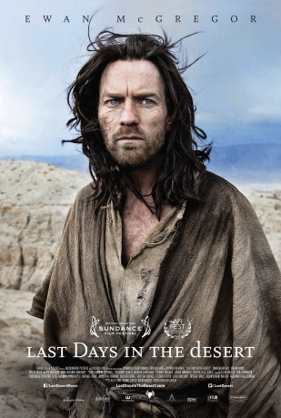

#7196 40 Tage in der Wüste
Alternativ: Last Days in the Desert
 
 IMDB-Wertung: 5.6 / 10
IMDB-Wertung: 5.6 / 10  Metascore: 0
Metascore: 0 
Ewan McGregor is Jesus - and the Devil - in an imagined chapter from his forty days of fasting and praying in the desert. On his way out of the wilderness, Jesus struggles with the Devil over the fate of a family in crisis, setting for himself a dramatic test.
Jahr: 2015
Dauer: 99 Minuten
FSK: 12
Land: USA Studio: Broad Green PicturesTonspuren: DTS - ,
Untertitel: Deutsch,
Auflösung: 1080p (1920x800) Größe: 5734 MB
Genre: Drama, Abenteuer, Geschichte
Regisseur: Rodrigo García
Drehbuch: Rodrigo García
Soundtrack:
Darsteller:
Datei: X:\2015(A-F)\40 Tage in der Wüste (2015, FSK12, 1920x800).mkv seit 09.10.2017
Festplatte: HD 2015(A-Z)
 Es gibt insgesamt 143 Filme in der Gruppe '2015(A-F)'
Es gibt insgesamt 143 Filme in der Gruppe '2015(A-F)'